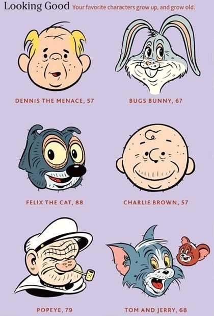

Thu, 02 Sep 2010 16:36:00 · cartoon · charliebrown · popeye · bugsbunny · felixthecat · tomandjerry
When Cartoon Characters Grow Old
Hilarious take on how those famous cartoon characters from your childhood would look like when they grow old. Blimey, what is the world coming to when even Charlie Brown and Tom & Jerry have sagging face!

Not so cute anymore, eh? ~ Imagery courtesy of 9gag, thanx!